Gabriele Sicuro
Bologna, 27 novembre 2026
All'inizio non c'erano strisce sul corpo della tigre. Quelle strisce […] sono tutte disegnate in segno di gratitudine verso la tigre dal corvo […] Le strisce rappresentano il valore.
In seguito, la vespa rubò una delle strisce della tigre. Per questo ha striature di tigre su tutto il corpo…
Leggenda dell'etnia nàxī, Cina
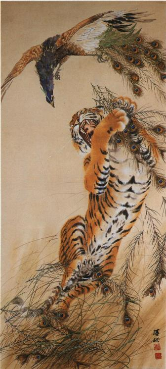
Le strisce della tigre, della vespa o della zebra, o la geometria delle macchie del giaguaro o del leopardo, sembrano troppo eleganti e complesse per essere frutto del caso: da qui i miti, i pourquoi-tales.
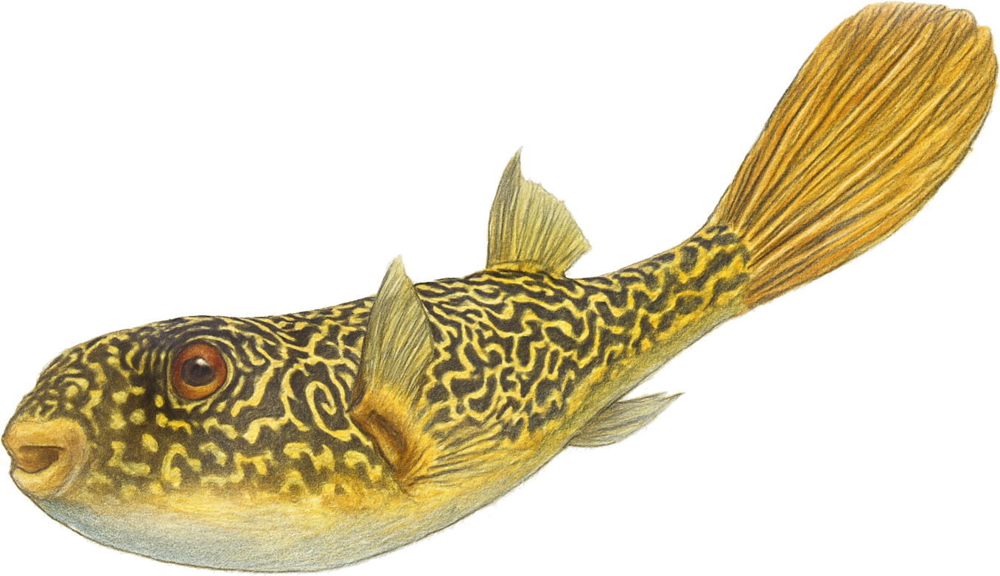
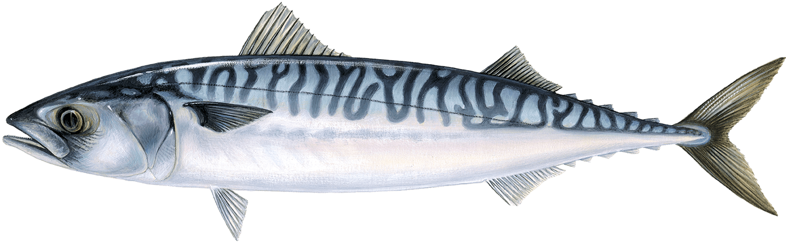
Queste geometrie sono ovunque in natura, persino sulle nostre dita. Miliardi di singole cellule agiscono in base a stimoli ricevuti localmente. Eppure una certa coordinazione emerge dando vita a geometrie inattese. Come è possibile?
Nel 1952, il matematico britannico Alan Turing si chiese pressappoco la stessa cosa.
È possibile costruire un modello matematico che descriva come gli organismi viventi costruiscono questi motivi geometrici complessi sulla base di semplici principi locali?
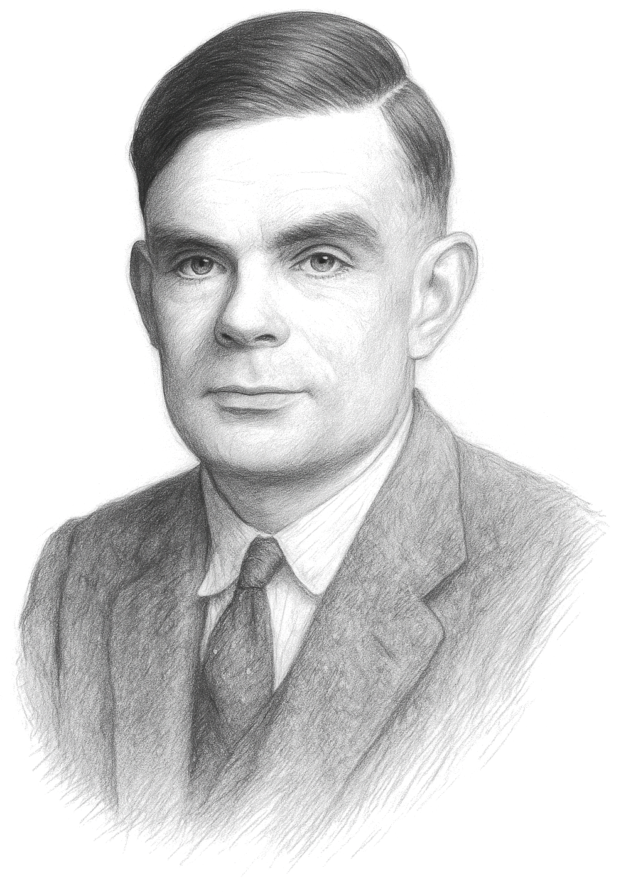
Alan Turing (1912–1954)
La domanda riguarda la morfogenesi: come strutture sofisticate possano emergere senza una «guida intelligente», per esempio nello sviluppo degli arti degli embrioni dei vertebrati.
Turing capì che una grande varietà di comportamenti può nascere da due componenti in competizione, interagenti tra loro.
Studiamo le concentrazioni di substrato e attivatore, \(S(x,y,t)\) e \(A(x,y,t)\), invece del numero discreto di elementi. Queste concentrazioni dipendono dal tempo e vorremmo capire come cambiano al passare di esso. Matematicamente, siamo interessati a \[\frac{\partial S(x,y,t)}{\partial t},\qquad \frac{\partial A(x,y,t)}{\partial t}.\] Ma per descrivere queste quantità abbiamo bisogno di tenere conto di quattro ingredienti.
Le due sostanze si muovono caoticamente nello spazio, tendendo a distribuirsi dalle zone dove sono più concentrate verso quelle dove lo sono meno. Il simbolo \(\Delta\) è il laplaciano, che descrive come la concentrazione varia nello spazio. Se abbiamo una funzione \(f(x,y)\), esso è
I coefficienti positivi \(D_S\) e \(D_A\) determinano la rapidità della diffusione: \(D_S>D_A\).
L'attivatore \(A\) utilizza il substrato \(S\) per replicarsi. Il termine \(\textcolor{red}{-SA^2}\) indica che il substrato viene consumato, mentre \(\textcolor{red}{+SA^2}\) indica che la concentrazione dell'attivatore aumenta. Più attivatore è già presente, più rapidamente può avvenire la reazione: è un esempio di autocatalisi.
Il substrato viene continuamente immesso nel sistema, per esempio da cellule che lo producono, e il termine \(\textcolor{green}{+r(1-S)}\) descrive questo meccanismo: se \(S\) è piccolo, il rifornimento è maggiore, se \(S\) è vicino a 1, il rifornimento diminuisce. Il parametro \(r\) controlla la rapidità del rifornimento.
L'attivatore non funziona ininterrottamente. Il termine \(\textcolor{purple}{-kA}\), \(k>0\), descrive la perdita di attivatore.
La competizione tra diffusione, autocatalisi, rifornimento e rimozione può produrre sorprendenti strutture spaziali. Facciamo qualche esperimento.
Assumiamo un tessuto quadrato. Il substrato riempie il tessuto, ma nella regione centrale è più diluito e sono presenti attivatori.
Concentriamoci sugli attivatori, che immaginiamo siano gli elementi colorati: dove il plot è scuro, ci sono attivatori. Come evolve la situazione?
Reazione \[S + 2A \to 3A\] disattivata: solo diffusione, rifornimento e rimozione.
Il tasso di disattivazione degli attivatori è leggermente aumentato.
Il tasso di rifornimento del substrato è leggermente ridotto.
Strutture complesse possono emergere da regole semplici e da composti che si muovono a caso e senza strategia.
Contrariamente a quanto si potrebbe attendere, non si ottiene necessariamente un mescolamento omogeneo, ma strutture complesse che nascono dalla competizione tra elementi con velocità diverse.
Un tema che collega equazioni differenziali, processi stocastici e analisi numerica.
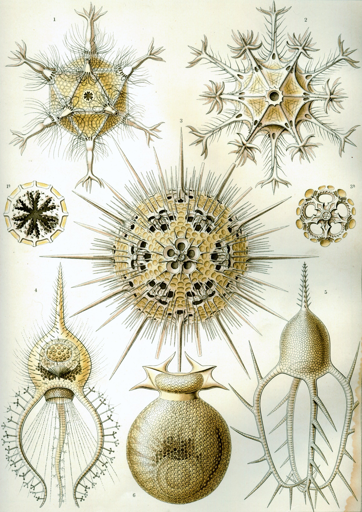
Ernst Haeckel, gusci di radiolari
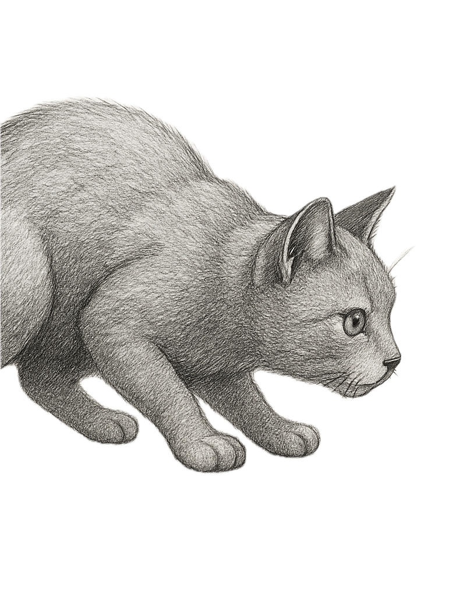
Oltre a strutture spaziali che emergono da interazioni locali, esistono strutture temporali che sembrano emergere senza un motivo ovvio.
Un esempio: sistemi in cui coesistono prede e predatori.
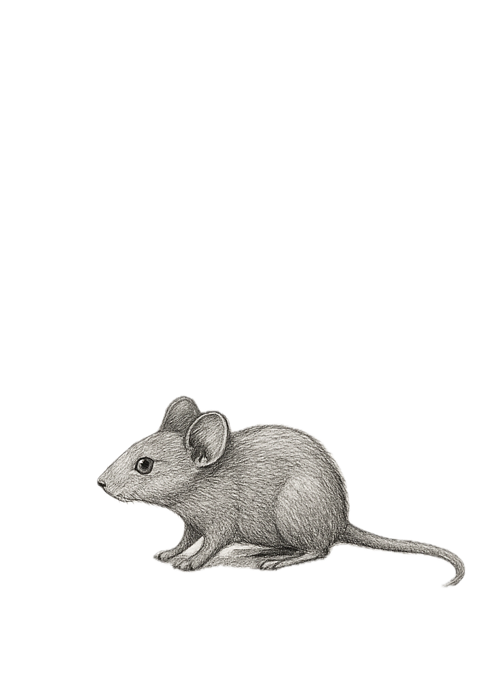
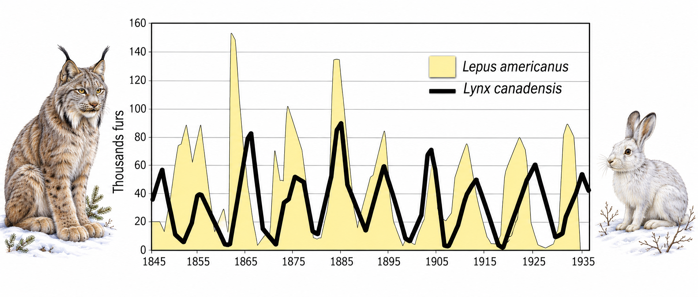
Numero di pellicce vendute alla Hudson's Bay Company negli anni. Da Wikipedia.
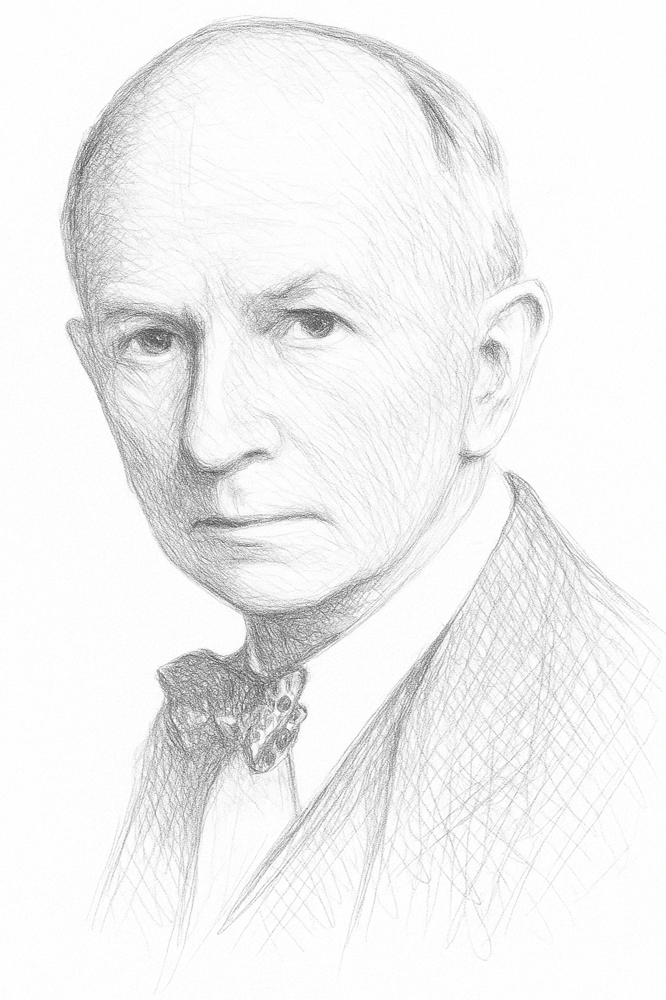
Alfred Lotka (1880–1949)
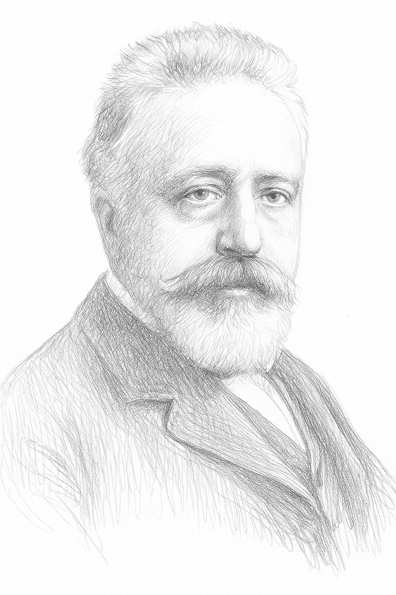
Vito Volterra (1860–1940)
Perché queste fluttuazioni? Studiando le popolazioni di pesci nell'Adriatico, nel 1926 Vito Volterra ottenne una serie di equazioni che riproducevano questo comportamento. Equazioni simili erano state ottenute in precedenza da Alfred Lotka per le reazioni chimiche.
Consideriamo due popolazioni al variare del tempo:
La popolazione delle prede:
La popolazione dei predatori:
Qui \(a,b,c,d\) sono numeri positivi. Quando
\[ X(t)=\frac{d}{c}, \qquad Y(t)=\frac{a}{b} \]le popolazioni non cambiano: sono in equilibrio.
Come cambiano le oscillazioni se modifichiamo natalità, predazione e mortalità?
Condizioni iniziali: \(X(0)=24\), \(Y(0)=6\). ● Prede ● Predatori
Ogni punto rappresenta una coppia di popolazioni \( (X(t),Y(t)) \). Osserviamo l'orbita nel piano mentre cambia il tempo.
Ascissa: X (prede). Ordinata: Y (predatori). Partenza: \(X(0)=24\), \(Y(0)=6\).
Come Turing, Volterra e molti altri hanno mostrato, la matematica permette di comprendere fenomeni biologici, ecologici e sociali apparentemente misteriosi.
Da regole semplici possono emergere strutture e comportamenti sorprendentemente complessi.
È questo il motivo conduttore di una immensità di fenomeni osservati nei più svariati contesti, dalla biologia all'intelligenza artificiale. La matematica è da sempre uno strumento essenziale per catturarlo e interpretarlo.
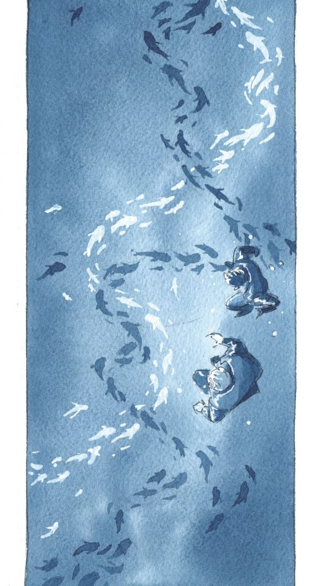
Finora gli ingredienti non seguivano strategie: si muovevano a caso e interagivano secondo regole locali.
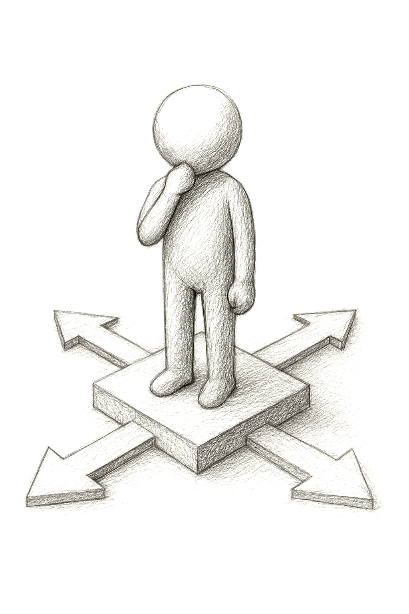
Strutture estese possono emergere anche quando le componenti agiscono autonomamente con un obiettivo personale: diventano agenti. Modelli molto utilizzati in economia e nel machine learning.
Due tipi di agenti A e B occupano alcune celle di una griglia.
Ogni agente desidera almeno una percentuale \(p\) di vicini del proprio gruppo. Se la percentuale è troppo bassa, si sposta in una cella libera. Può essere un modello per una città in cui esistono due gruppi sociali che convivono, in modo che ogni cella della griglia sia una abitazione.
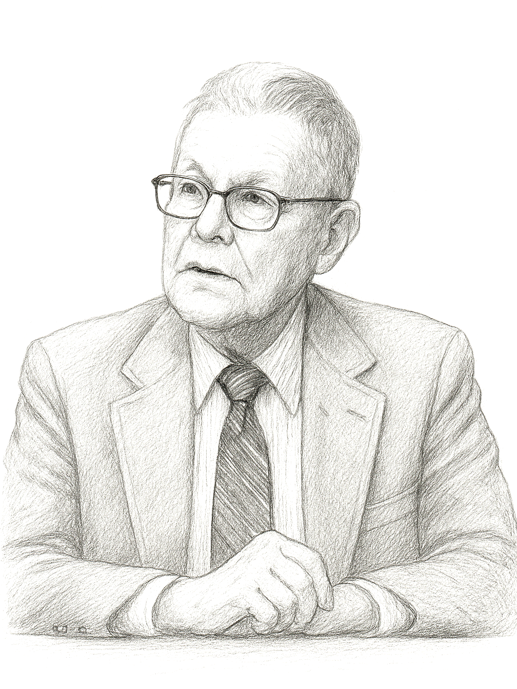
Thomas Schelling (1921–2016), Nobel per l'Economia 2005
Una preferenza debole può lasciare una comunità relativamente mescolata.
Ma basta una preferenza leggermente più forte per far emergere segregazione spontanea, anche senza alcun coordinamento centrale!